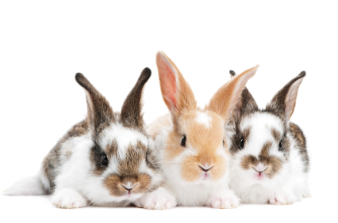

Dogs

Dogs, often referred to as "man's best friend," encompass an incredible variety of breeds, each with its own unique characteristics. Known for their unwavering loyalty and companionship, these intelligent animals require dedicated care.
Regular exercise tailored to their breed, a well-balanced diet, and consistent training are crucial for fostering a strong bond and ensuring their overall well-being. From small toy breeds to large working dogs, understanding their specific needs and providing proper veterinary care contributes to a fulfilling and enduring relationship with these furry friends.
Cats

Cats, with their graceful demeanor and playful antics, have earned a special place in many households. While they are generally more independent than dogs, catering to their diverse personalities remains essential for a harmonious coexistence.
Regular veterinary check-ups, a well-rounded diet, and engaging toys are pivotal in maintaining their physical and mental health. Whether it's a talkative Siamese or a laid-back Ragdoll, recognizing and respecting their individual preferences enhances the joy of having a feline companion.
Rabbits
Rabbits, with their gentle nature and distinctive ears, make for endearing companions. Recognizing their need for ample space to hop and play, responsible rabbit owners provide a well-structured living environment. A balanced diet, including hay, vegetables, and pellets, is essential for their digestive health.
Regular grooming, including nail trims and brushing, contributes to their well-being. As social animals, rabbits often benefit from being paired with a compatible companion, enhancing their quality of life.
Fish
The world of aquariums opens up a captivating realm of underwater beauty and diversity. From vibrant tropical fish to the serene nature of goldfish, creating a suitable aquatic habitat requires careful consideration. Proper filtration, temperature control, and species-specific care contribute to the thriving ecosystem within the tank.
Enthusiasts delve into the intricacies of water chemistry and the unique needs of their chosen fish species, ensuring a visually stunning and healthy aquatic environment.
Hamster

Hamsters, those small, nocturnal explorers, are delightful pocket-sized companions. Creating a secure and stimulating environment for these furry friends involves providing a suitable cage, complete with a cozy nest, exercise wheel, and tunnels for exploration.
A balanced diet, fresh water, and regular cage cleaning are essential for their health and happiness. While they may be solitary by nature, gentle handling and interaction contribute to a trusting relationship with these pint-sized pets.
Bird
Birds, with their colorful plumage and melodic tunes, add a dynamic and lively element to the world of pets. From the chatty parakeet to the majestic cockatoo, understanding their social nature and cognitive abilities is key to their well-being. Spacious cages, a diverse diet rich in nutrients, and mental stimulation through toys and interaction contribute to their physical and mental health.
Regular grooming and veterinary care ensure a long and vibrant life for these feathered companions.
Turtle
Turtles, fascinating reptilian companions, require meticulous care to thrive. A well-maintained habitat, complete with appropriate lighting, heating, and a basking area, is crucial for their physical well-being.
Offering a varied diet that aligns with their species and ensuring clean water is essential for their longevity. Regular health assessments, including monitoring shell condition and behavior, contribute to the overall health of these intriguing shelled pets.
Snake

Keeping a snake as a pet introduces enthusiasts to the world of exotic and fascinating reptiles. Each snake species comes with specific requirements, from enclosure design to temperature gradients. Responsible ownership involves understanding their behavior, offering a secure habitat, and providing a diet tailored to their species.
Regular veterinary check-ups and attention to their unique needs ensure a healthy and fulfilling life for these captivating serpentine companions.